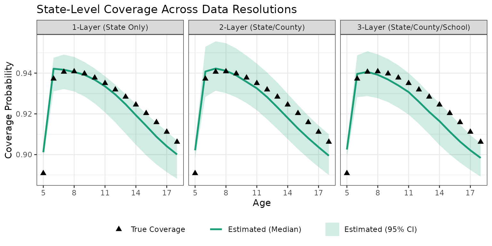

Flexible Location Layers in imuGAP
Source:vignettes/user_specified_layers.Rmd
user_specified_layers.RmdOverview
The imuGAP package models vaccine coverage on nested
population partitions - e.g. a state divided into counties divided into
schools. A key strength of imuGAP is support for
flexible location layers: you can change the layer
depth based on the location hierarchy you provide. So, for example if
you provide only the most aggregated population (e.g. state-wide data),
the model will have 1 layer, but if you provide sub-populations
(e.g. counties) there will be 2 layers. If you also provide
sub-sub-populations (e.g. schools), there will be 3 layers, and so
on.
Whatever the data resolution, imuGAP canonicalizes the
location tree, maps parent-child relationships across layers, and
estimates location offset parameters for each resolution level (beyond
fully aggregated populations).
This vignette demonstrates:
- Exploring arbitrary location hierarchies and verifying layer depths.
- Constructing models for 1-layer (state-level only), 2-layer (state and county), and 3-layer (state, county, and school) datasets.
- Fitting and comparing parameter recovery and coverage trajectories across different layer resolutions.
The Example Location Hierarchy
Let’s first inspect the full hierarchy available in
locations_sim:
| Scruggs County | Simone County | Watson County |
|---|---|---|
| Chickadee Elementary | Egret Elementary | Meadowlark School |
| Nuthatch Academy | Cardinal Academy | Goldfinch Elementary |
| Blue Heron School | Bunting School | Mockingbird Academy |
| Flycatcher Elementary | Tanager Academy | Kinglet Learning Center |
| Bluebird Learning Center | Oriole Youth Academy | Vireo School |
| Catbird Academy | Grosbeak Learning Center | Kingfisher Academy |
| Finch Elementary | Junco Elementary | Cormorant Elementary |
| Sparrow School | ||
| Towhee Children’s Academy | ||
| Warbler Elementary |
Most of our examples focus on using the higher resolution dataset
(i.e. including 3 layers, or down to schools). For this demonstration,
let’s create some alternative location data corresponding
to different data availability. Here, we’re using the convenient layer
information created by canonicalize_locations, but in real
applications you would of course only have the locations you have. These
filtered views simulate having high to low resolution data, correspond
to all the locations in the table (locs_3layer), the state
and county locations (locs_2layer), or just the state
(locs_1layer).
locs_3layer <- canonicalize_locations(locations_sim) # all the data
locs_2layer <- locs_3layer[layer <= 2] # state and county only
locs_1layer <- locs_3layer[layer <= 1] # state onlySimilarly, we filter our observations and associated metadata (i.e. populations) to match each location resolution:
data("observations_sim", package = "imuGAP")
data("populations_sim", package = "imuGAP")
data("latent_params_sim", package = "imuGAP")
# 3-Layer views (State, County, School)
# 1. Filter populations to locations present in locs_3layer
pops_3layer <- populations_sim[loc_id %in% locs_3layer$loc_id]
# 2. Extract relevant observations corresponding to filtered populations
obs_3layer <- observations_sim[obs_id %in% pops_3layer$obs_id]
# 3. Confirm extracted observations don't have unpresent locations in original population data
stopifnot(!populations_sim[obs_id %in% obs_3layer$obs_id, any(!loc_id %in% locs_3layer$loc_id)])
# 2-Layer views (State and County)
# 1. Filter populations to locations present in locs_2layer
pops_2layer <- populations_sim[loc_id %in% locs_2layer$loc_id]
# 2. Extract relevant observations corresponding to filtered populations
obs_2layer <- observations_sim[obs_id %in% pops_2layer$obs_id]
# 3. Confirm extracted observations don't have unpresent locations in original population data
stopifnot(!populations_sim[obs_id %in% obs_2layer$obs_id, any(!loc_id %in% locs_2layer$loc_id)])
# 1-Layer views (State only)
# 1. Aggregate and filter populations to State level (locs_1layer)
pops_1layer <- copy(populations_sim)[, loc_id := "State"]
pops_1layer <- pops_1layer[, .(weight = sum(weight)), by = .(obs_id, loc_id, cohort, age, dose)]
pops_1layer <- pops_1layer[loc_id %in% locs_1layer$loc_id]
# 2. Extract relevant observations corresponding to filtered populations
obs_1layer <- observations_sim[obs_id %in% pops_1layer$obs_id]
# 3. Confirm extracted observations don't have unpresent locations in population data
stopifnot(!pops_1layer[obs_id %in% obs_1layer$obs_id, any(!loc_id %in% locs_1layer$loc_id)])2. Fitting the Model
To fit the model at different resolutions looks basically the same: just use 1-layer, 2-layer, or 3-layer location inputs. Note that no other setting tweaks are required, but these can take some time to run; if following along, you probably want to load the results from the package data.
st_opts <- stan_options(iter = 1000, chains = 4, seed = 1L)
# various layer fits
fit_3layer <- sampling(obs_3layer, pops_3layer, locs_3layer, stan_opts = st_opts)
fit_2layer <- sampling(obs_2layer, pops_2layer, locs_2layer, stan_opts = st_opts)
fit_1layer <- sampling(obs_1layer, pops_1layer, locs_1layer, stan_opts = st_opts)To load precomputed results, get the following items from package data:
3. Using the Fits to Predict Coverage
Predicting coverage from fitted models involves providing a target
grid for the desired locations, ages, cohorts, and doses, and then
calling predict(). We can load the example target dataset
bundled with imuGAP package data and filter it to match
each location resolution:
data("target_sim", package = "imuGAP")
# 3-Layer Prediction (State, County, School)
target_3layer <- target_sim[loc_id %in% locs_3layer$loc_id]
predict_3layer <- predict(object = fit_3layer, target = target_3layer, posterior_size = 100)
# 2-Layer Prediction (State and County)
target_2layer <- target_sim[loc_id %in% locs_2layer$loc_id]
predict_2layer <- predict(object = fit_2layer, target = target_2layer, posterior_size = 100)
# 1-Layer Prediction (State only)
target_1layer <- target_sim[loc_id %in% locs_1layer$loc_id]
predict_1layer <- predict(object = fit_1layer, target = target_1layer, posterior_size = 100)If you are working along through this vignette, you may wish to
simply load the pre-computed prediction results, as we bundled them with
imuGAP package data:
data("predict_sim", package = "imuGAP")
data("predict_sim_2layer", package = "imuGAP")
data("predict_sim_1layer", package = "imuGAP")You can summarize the predictions using summary() to
obtain posterior median (q50) and 95% credible intervals
(q2_5, q97_5):
summary_3layer <- summary(predict_sim)
summary_2layer <- summary(predict_sim_2layer)
summary_1layer <- summary(predict_sim_1layer)4. Comparing Different Resolution Fits
As seen in previous sections, the actual fitting and prediction steps are identical irrespective of data resolution. Let’s see how the different resolutions affect parameter and coverage estimation.
First, compare estimated State-level coverage from the 1-layer,
2-layer, and 3-layer model fits against the latent coverage stored in
latent_params_sim$coverage. Faceting by data resolution
(columns) shows that macro State trends are estimated accurately
regardless of whether lower-level sub-population data are provided:

State-level coverage comparison across 1-layer, 2-layer, and 3-layer model fits against true values.
Conclusion
Support for flexible location layers allows
imuGAP to adapt to whatever location hierarchy you provide.
- If you provide only state-level aggregated data (1
layer), macro trends are estimated accurately. - If you provide
sub-populations like counties (2 layers) or
sub-sub-populations like schools (3 layers), the model
automatically builds hierarchical random offsets down the location tree
to capture finer resolution variation.